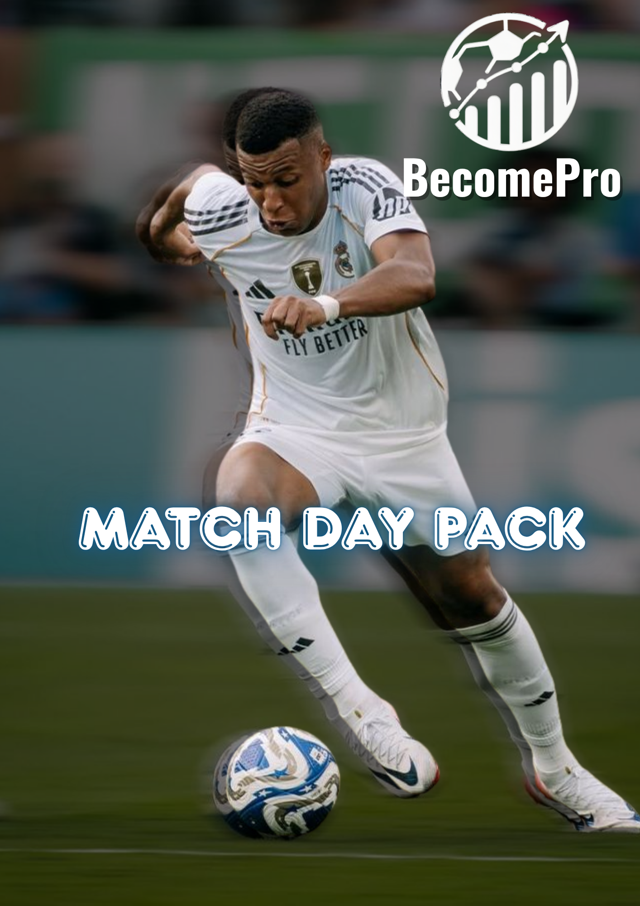

Онлайн пакет
Мачов пакет
Пакет за играчи, които искат да се подготвят по-добре преди мач и да изградят по-добра рутина около представянето си.
Цена€49.99
Достъп до материалите след покупка.

Въведение
Мачът започва преди първия съдийски сигнал.
Мачовият пакет е за играчи, които искат по-добра рутина преди, по време и след мачовия ден.
Целта е футболистът да бъде по-подготвен, по-спокоен и с по-ясна идея как да се грижи за представянето си.
Какво има вътре
Система за мачова готовност.
Пакетът събира практични насоки за подготовка, увереност, възстановяване и по-добра рутина около мача.
 Рутина преди мач
Рутина преди мач Готовност и увереност
Готовност и увереностПълно описание
Какво представлява пакетът?
Мачов пакет е продукт за футболисти, които искат да се подготвят по-професионално около мачовия ден. Той помага на играча да мисли не само за тренировката, а и за хранене, подготовка, фокус и възстановяване.
Подходящ е за играчи, които искат по-добра рутина и по-голяма увереност в деня, когато представянето има значение.
Пакетът се използва като практичен наръчник и система за навици около мача. Нужно е постоянство и желание играчът да подхожда по-сериозно към детайлите.
ФокусПодготовка • Увереност • Възстановяване
За играчи, които искат по-добра мачова готовност и по-ясна рутина.
Какво получаваш
По-добра структура около мачовия ден.
Подготовка
Насоки как да влезеш по-готов в мача.
Рутина
По-ясна система преди и след мач.
Увереност
Фокус върху спокойствие и готовност за игра.
Възстановяване
Практични насоки след натоварване.
Достъп
Материали, които можеш да следваш след покупка.
За кого е подходящ
За футболисти, които искат по-добра мачова готовност.
Този пакет е подходящ за играчи, които искат да изградят по-добри навици около мача, да се подготвят по-ясно и да се възстановяват по-умно.